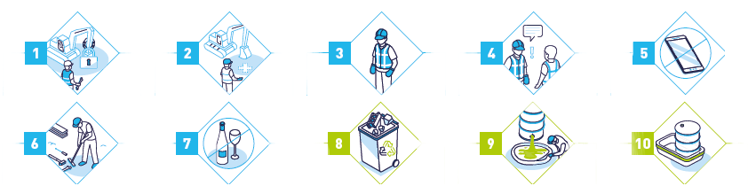

| Type | Description | Action | Échéance | Statut | Suppr. |
|---|
|
Pour réaliser une observation HSE pertinente, les situations de travail doivent être analysées selon les Facteurs Humains et Organisationnels (FHO). Exemples :
|